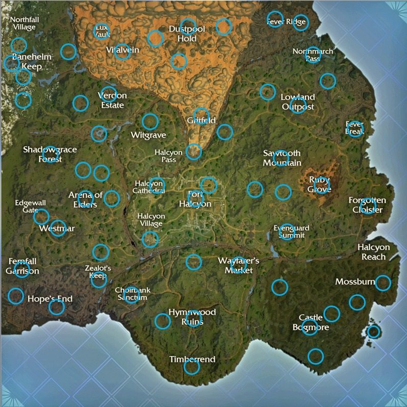

O spellbreak é permeado por mecânicas que tornam ele um jogo mágico, tais como mana, levitação, esquiva, manoplas e suas magias, runas que te concedem poderes, equipamentos de combate, poções de cura e fragmentos de escudo, talentos, bênçãos e baús.
A mana é algo intrínseco aos humanos, no jogo se você entrar em uma partida de battle royale normal, você terá a sua disposição 50 de mana inicial, e no modo dominion, 70.
No spellbreak existe a mecânica de levitação, onde o personagem pula 1m e a cada levitação descontinua ele sobre aproximadamente 4m.
A esquiva, que foi implementada no cap. 3 assumindo o lugar do agachamento, é um impulso que o personagem dá, exclusivamente, para os lados, ou seja, não vai nem para cima e nem para baixo por si só.
Após você tomar algum dano mágico seja no seu escudo ou na sua vida existem as poções de vida, as poções de proteção, que reparam vida e escudo e os fragmentos de escudo. Existe uma poção que te concede +2 cargas de poder secundário e de runa.
Cada ser humano tem 7 pontos de talento para administrar entre habilidades do corpo, da mente e do espirito, as quais te dão habilidades de redução de efeitos negativos, recuperar vida ao dar dano, não ser aturdido após morrer e muito mais.
Cada talento possui 3 níveis, e para você conseguir melhorar seus talentos você precisa ler o que nós chamamos de pergaminhos com cada parte tendo o seu próprio pergaminho (alguns talentos são renováveis podendo-se ler mais de 3 pergaminhos).
Cada manopla tem seu respectivo santuário, que são lugares se dedicam a te dar uma manopla rara e a benção da manopla, que concede ao usuário o nível 1 do respectivo elemento. (dica: pegue a benção exclusivamente de uma manopla secundária)
existem 5 tipos de báus: temos 3 deles que são de tamanho (pequeno, médio e grande), temos o baú épico que te da alguma coisa épica e um pergaminho e temos as esféras de mana, que são baús um pouco diferentes.
As esféras de mana são os únicos baús que abrem em 20s e são capazes de dar itens lendários, assim como um baú épico elas dropam um pergaminhi também, porém as esféras não dão apenas itens lendários, elas podem dar itens épicos também.
Vestindo a primeira manopla
Cada manopla, atualmente 6, tem suas magias, suas habilidades e seus níveis. quando você começa no jogo, ele te da apenas a opção de jogar com a manopla de fogo.
Para iniciar a fila de algum modo de jogo você precisa obrigatoriamente selecionar uma manopla como sendo a principal, já que no decorrer do jogo você vai ganhando habilidades novas (as manoplas secundárias não ganham novas habilidades, exceto ao se pegar uma benção ou com o talento de ambidestro, os quais só garantem o nível 1 da manopla).
-
Manopla de fogo (piromantes)
sua magia é atirar bolas de fogo e como seu poder secundário ela invoca uma parede de fogo.
inimigos com acerto direto são incendiados por 2s. raio de explosão da bola de fogo é de +200%.
suas paredes de fogo agora não te causam mais dano e ao passar pela sua parede de fogo você voa por 2s.
suas paredes de fogo queimam com um fogo azul por 2s que da mais 100% de dano.
suas bolas de fogo ao acertarem algo se quebram em novos 6 pedacinhos que incendeiam os inimigos.
-
Manopla de pedra (moldapedras)
sua magia é atacar o chão e criar uma fenda no chão chamada abalo sísmico e seu poder secundário é moldar uma bola de pedra e atira-la.
o usuário recebe 20 de escudo adicional e ao criar um abalo sísmico reparar 3 de escudo.
ao usar um abalo sísmico o usuário irá acelerar em direção ao chão.
a sua pedra cresce de tamanho conforme fica no ar.
o usuário consegue carregar uma pedra adicional.
-
Manopla de raio (conduíte)
sua magia é lançar flechas de raio e como poder secundário você invoca um raio.
nível 1 (energia potencial)
para cada flecha lançada o dano aumenta em mais 1 estagnando em mais 5 até o fim da conjuração.
ao invocar um raio você ganha 1 carga de runa adicional.
nível 3 (pico de energia)
ao invocar um raio suas flechas de mana passarão a custar 0 de mana e sua mana regenera mais rápido por 4s.
nível 4 (descarga secundária)
ao invocar um raio caem 5 raios no lugar invocado.
-
Manopla de tóxico (toxicologista)
sua magia é atirar jatos de veneno e como poder secundário você lança uma núvem tóxica.
ao entrar em contato com o chão os jatos tóxicos formam uma poça pegajosa que da dano.
nível 2 (névoa evanescente)
o usuário se torna imune à sua própria nuvem tóxica e ao passar por ela você fica invisível por 3s e é impulsionado.
enquanto estiver invisível os jatos tóxicos darão +75% de dano.
nível 4 (espalhando a doença)
o usuário atira 3 nuvens tóxicas de uma vez.
-
Manopla de gelo (filho do gelo)
sua magia é criar uma flecha de gelo e como poder secundário o usuário conjura uma um anel de gelo que congela quem estiver dentro dele menos o usuário.
nível 1 (entusiasmo congelado)
sua flecha de gelo deixa um rastro na superfície, você ganha velocidade e fica imune ao congelamento e retardamento.
ao mirar você a silhueta dos inimigos aparece e ao estar 100% carregado a flecha custará 0 de mana.
enquanto cunjura seu anel de gelo o usuário fica imune e o anel perdura por mais 100%.
ao sobrecarrecar por mais 0,5s a flecha dará mais 35% de dano.
-
Manopla de vento (tempestade)
sua magia é lançar navalhas de ar e como poder secundário o usuário conjura um tornado.
nível 1 (explosão de vento)
ao atirar navalhas de vento pelas superfícies o usuário é jogada para trás.
usuário imune à atração de seu tornado e ao entrar nele, levado ao ar.
ao atirar navalhas em alguma superfície ou entrar em seu tornado o usuário receberá um aumento de 20% de dano mágico e menos 10% de dano.
por 1s ao estar no ar sua velocidade de recarga de feitiço aumenta em 100%.
As runas são itens que em suma te darão alguma espécie de movimento, como a runa da investida(popularmente chamada de dash), mas existem outras runas que não tem o foco em te dar um movimento imediato. Atualmente existem 9 runas:
essa runa te torna invisível por 1s e te leva 8m para para frente.
essa runa te teletransporta para a posição desejada (máx. de 60m).
ao ativar a runa ela irá gravar o seu estado físico e após 4s irá te retornar ao mesmo lugar e com a msm quantidade de vida e escudo e retira efeitos negativos.
ao ativar a runa o usuário será capaz de ver os inimigos atrás de qualquer coisa em um raio de 100m e ganhará +4 de velocidade.
Runa dos passos saltitantes
ao usar ela o usuário dará um salto de 15m e subir uma altura de 5m.
o usuário será capaz de voar por 5s, mas será interrompido após uma colisão ou ao usar outro movimento.
o usuário será levado aos céus por 22m e só poderá ser utilizada outra vez após tocar o chão. após chegar ao seu ápice começará a cair lentamente ou até que o usuário use alguma magia.
ao usar a runa era te impulsionará para a direção escolhida por até 16m.
essa runa te deixa invisível e te da um bônus de +3 de velocidade por 8s.
Os equipamentos são: o amuleto, que da mais mana(começa com +10 e vai até +50), o cinto, que te da escudo(começa no +20 e vai até o +100) e a bota, que te da mais velocidade(começa no +1 e vai até o +5).
Observando a cartografia celeste
O mapa do spellbreak é bem vasto e detalhado, porém você precisa saber aonde ir, por isso existem 2 mapas os quais são interessantes de serem observados:
Mapa com os templos, locais de vigia (aegis warden) e torres de vigia.
 (1).png)
Mapa com todos os baús épicos.
 (1) (1) (1).png)
Mapa com todas as safes finais.
